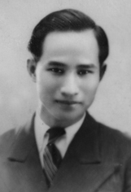

Chính tên là Phan Hạp. Sinh ngày 1 Janvier -1916 ở làng Bảo An, phủ Đ iện Bàn (Quảng Nam). Học: trường Chaigneau, trường Quốc học (Huế) có bằng thành chung. Hiện làm việc ở sở Kho bạc Tourane.
Đã đăng thơ: Tân Văn, Sông Hương
Đã xuất bản: Lời tim non (1941)

.Học trò trong Quảng ra thi
Thấy cô gái Huế chân đi không đành.
Tôi thấy rõ Xuân Tâm, người học trò Quảng ấy, có phải lòng một cô gái Huế không? Nhưng cảnh Huế cũng là một cô gái và cô gái này đã quyến rũ lòng non trẻ của Xuân Tâm.
Mặc dầu cảnh Huế cơ hồ Xuân Tâm không nói đến, không khí sông Hương núi Ngự vẫn mang mác trong thơ Xuân Tâm. Tìm kiếm Xuân Tâm hoài, tôi chỉ thấy một ít Xuân Diệu, một Huy Cận không buồn mênh mông, một xứ Huế không có cái bâng khuâng của Phan Văn Dật, cái vẻ tài hoa của Nguyễn Đình Thư, cái dáng non yếu của Mộng Huyền, cái vẻ ngây thơ của Thu Hồng cái ẩn ước của Thanh Tịnh. Huế ở đây trong sạch đứng đắn và nhất là có chừng mực. Nhà văn sĩ Pháp Pujarniscle viết về Huế có câu: "Thành phố mỉm cười khi thương đau, thở than khi vui vẻ".[1]
Quả có thế. Vui hay buồn ở Xuân Tâm đều có vẻ dịu dàng vừa phải. Ta hãy xem khi người buồn:
Đám cưới người ta vui vẻ nhỉ;
Pháo tràng gieo đỏ, tiệc liên miên;
Riêng tôi đi tránh, buồn và nghĩ:
- Cảnh ấy nào đâu phải cảnh tiên...
và khi vui:
Thấy chiều, hớn hở tôi ra đón
Như đứa trẻ con thấy mẹ về.
Chiều buồn, chiều đẹp, chiều mơn chớn,
Chiều ru êm ái khúc lòng tê.
Vui hay buồn cũng phảng phất như nhau.
Còn khi Xuân Tâm giận dữ thì thực... buồn cười: người như Xuân Tâm có lẽ không giận dữ được. Người mến tình yêu, ghét dục vọng. Muốn giữ vẻ thiêng liêng cho tình yêu, người hung hăng quát tháo:
Ôi khốn nạn! Ôi điên rồ! Giận tức!
Đuổi đi mau Xác thịt, đuổi đi mau!
Dắt nó ra, ném nó xuống lầu
Đẹp đẽ và nguy nga tình Yêu mến...
Tôi tưởng tượng cái cười ranh mãnh của Xác thịt, trong khi bị nhà thơ đuổi. Nó biết cái người hét nhiều và nói nhiều ấy chỉ tức giận vờ, và đã ân cần bảo " dắt nó ra" thì chẳng có gan nào ném nó đi đâu!
Đứng trước cuộc đời, Xuân Tâm có vẻ dè dặt. Cảnh trời hay tình người, Xuân Tâm chỉ muốn hưởng ở xa xa. Có khi mơ tưởng cảnh Đế thiên, người thấy những tượng đá thử thách Thời gian. Nhưng Thời gian chịu thua:
Mưa không tuôn, gió lặng, sấm không vang,
Trời nhạt nhạt sắp buông lời thân thiện...
Ấy bất cứ đề gì lời thơ vẫn một giọng nhẹ nhẹ, êm êm. Nó chậm chậm đi vào hồn ta như một buổi chiều Xuân Diệu.
Octobre- 1941
µ
XA LẠ
Chân ngắn quá không đi cùng Trái Đất
Để mắt nhìn cảnh lạ trải bên đường.
Hãy bằng lòng tấm tranh đóng trên tường
Và hình ảnh muôn màu in lá sách.
Mùi giấy mới thơm tho và trong sạch
Thế hương hoa ngào ngạt chốn xa vời...
Đây con tàu lướt sóng giữa mù khơi,
Mang với nó vui mừng hay chán nản;
Nơi quê cũ, đứng trên bờ hải cảng,
Có tình lang trông ng'ng quả tim yêu;
Mỗi chấm đen là hy vọng ít nhiều,
Mõi làn khói là một trời luyến ái...
Đây băng tuyết, giữa mùa đông tê tái,
Rơi, rơi, rơi... và bao phủ đồng quê;
Con đường làng hiu quạnh ngủ say mê,
Cây trắng xoá, cửa nhà đều trắng xoá...
Người ta tưởng lạc loài vào đồng mã,
Chung quanh mình vây kín bức màn tang...
Đây hoàng hôn. Vài tia nắng gần tàn
Còn sáng sót trên đồi cây xanh đậm;
Lũ xe gỗ nặng nề bò chậm chậm
Chở nho về. Mấy thiếu nữ xinh tươi,
Chân bước theo và môi nở nụ cười,
Đôi má chín hơn buồng nho chín thắm...
Đây dòng suối reo cười. Đua lội tắm,
Đoàn tiên nga để lộ tấm thân ngà;
Nước hôn chân... Sương thoa phấn màu da,
Hoa cỏ mởn tranh nhau cài mái tóc...
Cặp ngỗng trắng xinh xinh như bạch ngọc
Ngẩng cổ nhìn, say đắm đẹp thần tiên...
Đây nghênh ngang, pho tượng đá Đế Thiên
Lăn tròng mắt tròn xoe, đang đố thách
Thời gian thử gội phai màu cẩm thạch,
Nhưng thời gian khuất phục muốn xin hàng:
Mưa không tuôn, gió lặng, sấm không vang,
Trời nhạt nhạt sắp buôn lời thân thiện...
... Bao cảnh ấy trong trí tôi hiển hiện,
Nổi bật lên trước mắt nhắm lờ đờ
Mỗi khi thèm xa lạ, tôi ngồi mơ,
Và mở cửa thả hồn đi du lịch...
Lời tim non)
NGHỈ HÈ
Sung sướng quá, giờ cuối cùng đã hết
Đoàn trai non hớn hở rủ nhau về
Chín mươi ngày nhảy nhót ở miền quê
Ôi tất cả mùa xuân trong mùa hạ!
Một nét mặt trăm tiếng cười rộn rã
Lời trên môi chen chúc nối nghìn câu
Chờ đêm nay, sáng sớm bước lên tàu
Ăn chẳng được, lòng nôn nao khó ngủ.
Trong khoảnh khắc sách, bài là giấy cũ
Nhớ làm chi. Thầy mẹ đợi, em trông
Trên đường làng huyết phượng nở thành bông
Và vườn rộng nhiều trái cây ngon ngọt.
Kiểm soát kỹ có khi còn thiếu sót
Rương chật rồi khó nhốt cả niềm vui
Tay bắt tay, hồn không chút bùi ngùi
Các bạn hỡi, trời mai đầy ánh sáng.
(Lời tim non)
Chú thích:
[1] Ville où le deuil sourit, où la joie soupire